Viet Nam Trav-E-Logs©
| Sa Pa | 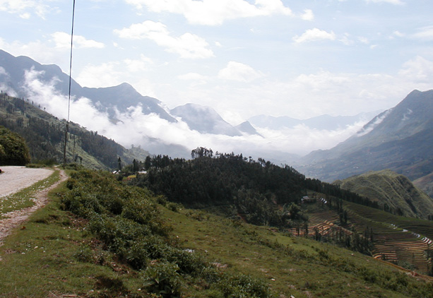 |
| back: Ha Long Bay | Trekking in North-Western Viet Nam |
================================= Traveled to the North-western part of Viet Nam, a popular destination for trekking and visiting hill tribes. Started a two-day trek to find only two other backpackers on the trip. Fantastic guide, refreshing weather, gorgeous scenery, lovely hosts. What a way to end my month in Viet Nam. This log will be less of a write-up and more of a photo-up. =================================
Jun 6 - 8, 2003
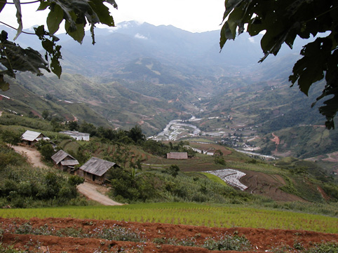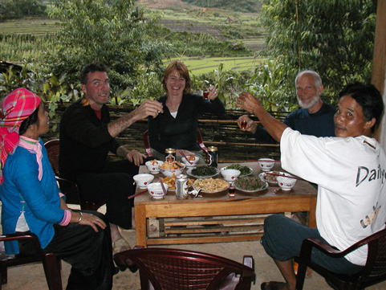
The trek was up and down hills and across valleys, around and through farmlands and bamboo stands. When we arrived at our host's house, dinner was prepared as we bathed. That evening we discovered the other backpackers were on their honeymoon.
| 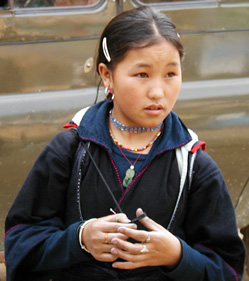 | 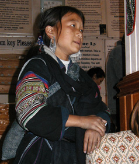 | 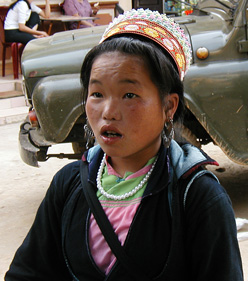 | 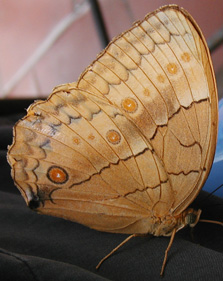 |
As tourists step off the bus in Sa Pa, young entrepreneurs meet them. Friendship wristbands are often given, with the understanding you are to buy only from them during your stay in Sa Pa. Photo to right seems to be a harmless butterfly -- but read on.
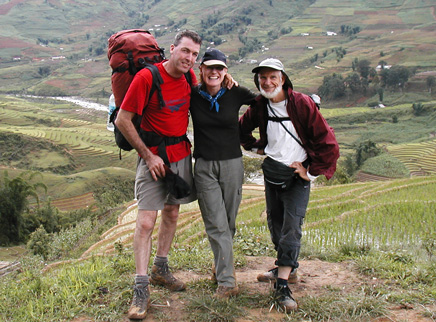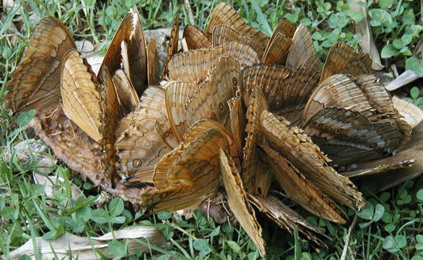
A happy bunch, in spite of the mud caked on our shoes. Photo to right shows the reason our host used a fly swatter each time a butterfly came close. Here they are feasting on cow dung.
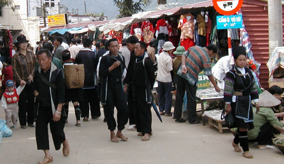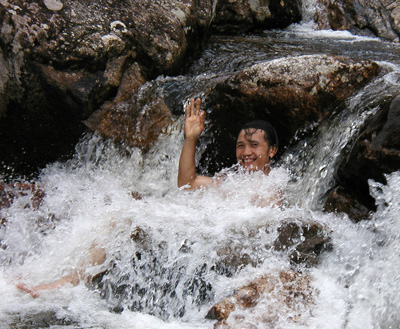
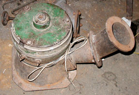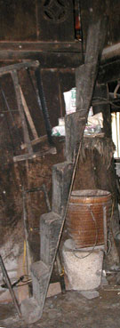Clockwise from left: Water from a stream is fed into this generator, producing enough power to run half a dozen light bulbs; Tribal clothing is still worn by some minorities, shown here in the market place; Our guide knew the best place to bathe at the end of the day; A portable staircase, used in lieu of a ladder.
Bill
------------------------------
"Travel is Fatal to Bigotry, Prejudice, and Narrow-minded ness" .... attributed to Mark Twain
| next: Road 2 Savannakhet |
| back: Ha Long Bay |